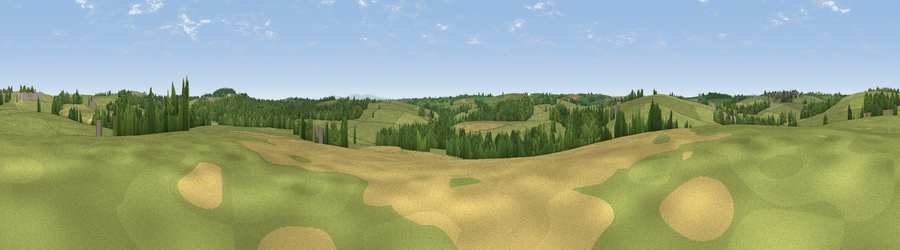

Viewpoint near Parkham Ash
#43025 in England · top 96% of its area beats it · near Parkham AshThe view, rendered

A 360° render of this exact spot computed from the terrain model, tree cover and land cover — summer colours, afternoon light, calibrated against photographs of famous viewpoints. Real trees, hedges and buildings will differ in detail.
The panorama
Grey silhouette: terrain skyline in each direction (720 bearings, Earth curvature and refraction included). Dashed green: skyline with trees (+15 m) and buildings (+8 m) as obstacles. Blue strip: how far the ground is visible on each bearing.
Where the view opens
Wedge length = distance to the farthest visible ground on that bearing (vegetation-aware). Rings at 10, 25 and 50 km.
What fills the view
77% grassland · 18% woodland · 4% cropland · 1% built-up
Angular shares of the visible panorama (visual magnitude), not map area. Landscape diversity 0.29 (0–1 Shannon).
Key numbers
More beautiful places nearby
The staircase of upgrades: each row has a higher view potential than everything closer. Driving times are estimates from straight-line distance, calibrated against real road routing — check an actual route before setting out.
| Place | Direction | Drive | Score |
|---|---|---|---|
| Viewpoint near Parkham | E · 3 km | ~8 min | 40.5 |
| Viewpoint near Bradworthy | SSW · 3 km | ~8 min | 49.2 |
| Viewpoint near Bucks Mills | N · 4 km | ~9 min | 79.6 |
| Viewpoint near Bucks Mills | NNW · 4 km | ~9 min | 82.0 |
| Viewpoint near Bucks Mills | NNE · 5 km | ~11 min | 84.0 |
| Viewpoint near Woolacombe | NNE · 25 km | ~40 min | 84.7 |
| Viewpoint near Crackington Haven | SW · 33 km | ~51 min | 88.1 |
| Viewpoint near Combe Martin | NE · 38 km | ~57 min | 88.9 |
50.95101, -4.35148 · source: screening · position refined by local search. Computed location — check access rights before visiting.